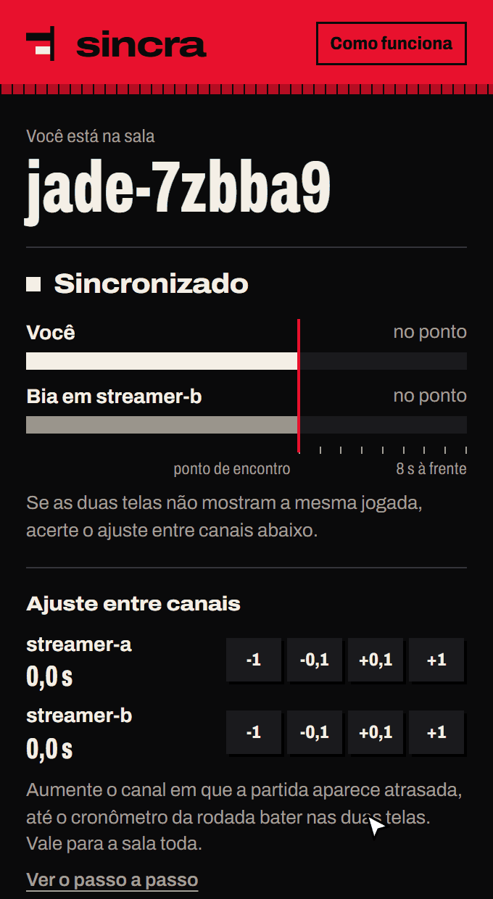

01 / como alinha
Quem está na frente espera
-
Cada player diz em que ponto da live está
A transmissão da Kick carrega o horário de cada trecho. A Sincra lê esse horário no seu navegador, sem mexer na sua transmissão.
-
A sala compara os participantes
Quem abriu o mesmo convite troca essa posição direto entre os navegadores, sem servidor no meio.
-
O adiantado toca mais devagar
O player que está à frente desacelera até alcançar o mais atrasado e depois volta ao normal. Se alguém travar ou cair, o ajuste se repete sozinho.

02 / outro streamer
Cada um na live de um streamer
Dois streamers na mesma partida, em times diferentes. Você assiste por um, seu amigo pelo outro, e os dois veem o mesmo round ao mesmo tempo.
- Entre na sala e abra, na mesma aba, o canal do streamer que você quer ver.
- A Sincra alinha pelo horário em que cada transmissão chega na Kick.
- Se um streamer transmite com atraso, compare o cronômetro da rodada nas duas telas e acerte o ajuste entre canais, em passos de 0,1 s.
- Quem acerta uma vez acerta para a sala toda.
03 / medição
Medido em live real
- Diferença antes de ligar a Sincra
- 4,0 s
- Tempo até os dois painéis mostrarem Sincronizado
- 15 s
- Diferença mediana nos dois minutos seguintes
- 0,09 s
- Maior diferença nesses dois minutos
- 0,27 s
04 / limites
O que ela faz e o que não faz
Faz
- Alinha todo mundo que está na mesma sala.
- Funciona com cada pessoa na live de um streamer diferente da mesma partida.
- Corrige sozinha durante a live, sem pausa e sem contagem.
- Mostra no canto da tela quem está no ponto e quem está à frente.
- Reconecta sozinha se a sala cair.
Não faz
- Não adianta ninguém. Ao vivo só é possível segurar quem está na frente.
- Não sincroniza a sua audiência, só quem instalou e entrou na sala.
- Não funciona no aplicativo de celular nem na TV.
- Ainda não cobre Twitch e YouTube.
05 / instalar
Da instalação à sala
Instale a Sincra
Pela loja de complementos do Edge.
Abra a live
Na Kick, a que você quer assistir.
Crie a sala
Clique no ícone da Sincra e em "Criar sala".
Mande o convite
Quem abre o link cai na mesma live e entra na sala.
A publicação na loja do Edge está em preparação e o link entra aqui quando ela for aprovada. A do Chrome vem depois.
06 / perguntas
O que os streamers perguntam
Minha audiência precisa instalar alguma coisa?
Não. A Sincra alinha só quem está assistindo junto na call. Para o chat nada muda.
Isso coloca atraso na minha transmissão?
Não. A extensão só controla o player em que você assiste à live da Kick. O que você transmite continua igual.
O que a sala fica sabendo sobre mim?
O nome que você digitou, o canal aberto e o atraso do seu player. Como a conexão é direta, quem está na sala também consegue ver o seu endereço IP, então mande o convite só para quem vai assistir junto. Não há conta, senha nem histórico. Os detalhes estão na política de privacidade.
Por que o áudio fica estranho por alguns segundos?
Enquanto alinha, o player toca entre 0,5x e 0,9x. Dura só o tempo de alcançar o grupo e some quando o painel mostra "Sincronizado".
Funciona se cada um estiver em um canal?
Sim. Dá para ver a mesma partida pela live de streamers diferentes. A Sincra alinha pelo horário em que cada transmissão chega na Kick, e um ajuste fino no painel da extensão cobre o atraso próprio de cada streamer.
A Sincra é da Kick?
Não. É um projeto independente, sem vínculo com a Kick.